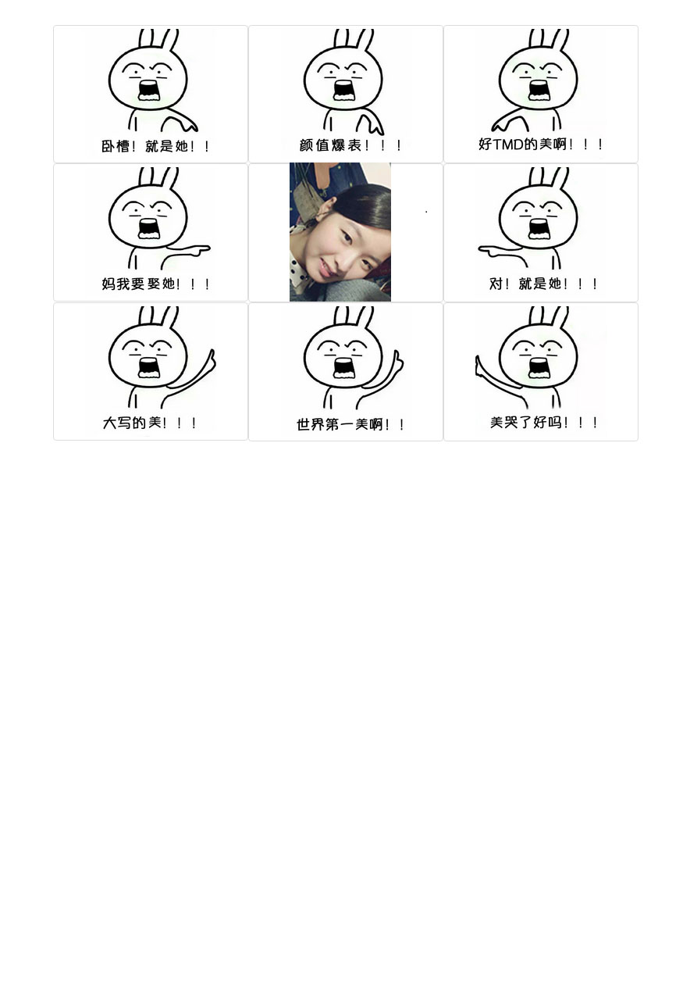

学煜 ❤ 曼瑾 一生一世
Press keyboard "↓" 开始倾听我的表白

过去的学煜一直是一个人生活，享受着孤独，也憧憬着爱情。

一个人的长廊

一个人的山岗

一个人的地铁

一个人的游乐场

但他依然乐观，微笑着，等待着

生活难免有风风雨雨

他总是能够轻松的应对

并且面带阳光、自信的笑容

生活也不会总是一帆风顺

但他每次都能勇敢的面对
随时准备接受生活的挑战


可是学煜的爱情又在哪里呢？
在镜子里面吗？他不敢相信

他去问大树，我的爱情在哪里？
大树告诉他，也许就在你的前方

于是，学煜一个人继续向前走
走在茫茫的雪地上

直到有一天学煜与曼瑾相遇了

学煜喜欢曼瑾，因为曼瑾的出现，学煜脸上有了更加灿烂的笑容

可是曼瑾会喜欢学煜吗？


终于有一天，学煜鼓起了勇气

学煜好高兴
每天学煜都会跟曼瑾聊天

然后两个人一起憧憬未来

一起想象以后在一起的日子

从今开始
学煜上学都是开心的

每次高兴地进入梦乡，都会梦到曼瑾

曾经一段时间学煜就成为了曼瑾的逛街助手

学煜和曼瑾一起去了好多地方玩

学煜也和曼瑾一样成为了一个吃货

后来，他们去了不同的城市

于是学煜开始无时无刻不在想念

想象着给曼瑾做好吃的

想象着每天早上，他们吃着自己做的美食

然后在同一个站台，高高兴兴的一起出去
学煜感觉自己好幸福。
因为自己有了家
那个有曼瑾在的地方

他们偶尔也会吵架

学煜不想这样


一定是我有什么做的不对，学煜在想
如果没有曼瑾在身边，窗外就没有风景

如果没有曼瑾在身后


学煜又怎会飞的更高更远
学煜不想这样。他要为曼瑾改变自己
曼瑾说她喜欢喜欢帮助他们家的人，于是学煜许下愿望


我愿为你变成什么都会修的人
爱情就像花草一样
需要用包容来浇灌

学煜很幸福，要过生日了
曼瑾开始为学煜准备礼物


看着礼物 学煜好开心 因为他知道她对他的心意 可惜的是学煜没有送给曼瑾过

想想后面还有一辈子 学煜好开心 因为可以和她 去全世界好多地方玩
学煜也会继续努力
为了他和曼瑾的梦之城堡


学煜很幸福，因为他找到了曼瑾。他相信后面的每天都会是快乐的
简简单单，体会着与曼瑾在一起的每一个刻
这只是他们幸福生活中的一件小事，小到无法引起别人的注意。可这是属于学煜和曼瑾的幸福生活。


曼瑾：永远有多远？
学煜：比时间多一秒就是永远，我会永远爱你
曼瑾：世界有多大？
学煜：你走到哪里，世界就有多大
愿得一人心，白首不相离


生日快乐~
I love you

学煜和曼瑾的故事会一直继续下去。
无论精彩、平淡都会是他们喜欢的。
-- 按“Esc"键有惊喜